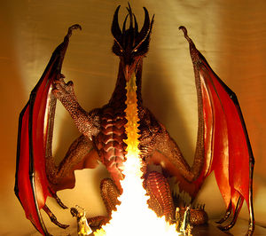
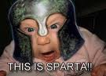

Dungeons and Dragons
 De: La Frikipedia, la enciclopedia extremadamente seria.
De: La Frikipedia, la enciclopedia extremadamente seria.
| De la serie fenómenos sociológicos:
|
| Dungeons and Dragons
|
|
|
| Atrapando a todos desde su nacimiento.
|
|
| Fenómeno sociológico
|
Dungeonus & dragonus
|
| Principios
|
Se cree que a finales del Imperio Romano o inicios de la Edad Media
|
| Zona de origen
|
Europa
|
| Consecuencias
|
El Señor de los Anillos
|
| Símbolos típicos
|
Desconocidos
|
| Frikismo
|
Al 100%
|
| ¿Gusta a la gente normal?
|
Generalmente a los Frikis y antisociales
|
| ¿Recomendable?
|
No mucho
|
| Máximo exponente
|
El Señor de los Anillos
|
Dungeons & Dragons (Calabozos y Dragones o Dragones y Mazmorras) es un juego de mesa clásico inventado aproximadamente entre los años 1399 y 1497. En este juego un grupo de personas fantasiosas recorren un mundo fantasioso lleno de mounstros fantasiosos (Minotauros, trolls, Arpias, Retretes con patas, Presidentes y Profesores de gimnasia con calza ajustada, etcétera); en resumen, es fantasía.
Al ser un juego muy antiguo (casi tanto como mi abuela) se considera el precursor de los juegos de Rol De Canela, y originalmente se jugaba con pergaminos (en su versión beta con papiros, dados y trozos de carbón).
Historia
Cursaba los años de 1399-1497 y dos hombres maduros se encontraban encerrados en el subsuelo (sótano)de la casa de la mamá el castillo de uno de ellos y ambos se aburrian de tanta paja en equipo, por lo que decidieron jugar con fichas de ajedrez en la mesa de ping pong. Cada uno le puso nombre a sus fichas y para hacerlo más intersante se fumaron la pipa de la paz taconeada de orégano para descubrir que cada ficha podía hablar y adoptar una personalidad. Después del trancazo de bajo presupuesto, Gary Gygax y Dave Anderson (semi-dioses Frikis) decidieron que no era tan malo crear una secta en la que los niños y adolescentes (fracasados socialmente) pudieran gastar su dinero y sus vidas alrededor de mesas de culto especialmente diseñadas para el Rol, con víctimas y misiones paranoicas que cumplir.
Ésta secta tomaría uno de los esquizofrénicos nombres de Tolkien, tomando en su primera edición el título de ΧΨΩプ〵óóカ, escrito en Tengwar. Como nadie entendía tocó elegir palabras aleatorias del libro de culto y llamarlo Dungeons And Dragons o Calabazas y Dragones.
Esta secta ha sobrevivido a 600 años de masacre de frikis, dos patriarcados: el de TSR (Tráfico de estupefacientes y dRogas) y de Wizards (los frikis más poderosos del universo en los tiempos actuales y futuros, dueños del monopolio que rige las vidas del FNM y otros dogmas) y 4 versiones de Dioses diferentes. Hoy en día la última edición planea terminar de consumir la vida inútil de los adolescentes y de todas las variables de Friki, incluidos los Geeks.
Modo de Juego
Esta seccion esta expresa para aquellas personas demaciado idiotas analfabetas, ya que contiene conocimientos que son absolutamente necesarios para poder comprender en su totalidad el artículo.
- Calabozo: Es un lugar oscuro, sucio y feo, donde encierran a la gente durante mucho tiempo para ser torturada tanto psicologicamente como fisicamente. Vease tambien Escuela
- Hagua: Cosa mojada que siempre se encuentra en un estado liquido en una botella, solido en el conjelador o el polo norte y gaseoso en las alcantarillas. Muy importante para poder ir al baño. Vease Hagua
- Respirar: Esta es una de esas cosas que absolutamente necesarias para poder terminar de leer el articulo, no importa de que religion, raza o planeta seas, si no respiras no podrás leer porque causa una insuficiencia renal en los ojos o algo asi. Mejor que el Dr. House nos lo explique: Explicacion del Dr.House
- Pentaquismiriohexaquisquilohexacosiotetracontapentágono: Poligono de 56.465 lados. (Todos los lados iguales)
- Rol: dejemos que un experto te lo explique en Rol
- Master: ¡porque tu lo has pedido! (sí tú, no te hagas al pendejo), un artículo completo aquí: Master
El Juego definitivo
El reglamento impuesto por la secta implica atroces rituales de manipulación emocional, psicológica y física a los dados (sí, estos tienen el equivalente a una mente o alma propia) y jugadores, estos métodos llamados vulgarmente sistema D20 constan de diferentes elementos y fases de los ritos.
El mundo
 ... y este un dragón. (Todavía no entiendo como va el juego)
El mundo de D&D suele estar plagado de referencias esquizofrénicas nacidas en la era medieval, cuando drogarse era normal y los bosques estaban llenos de gente rara o deschavetada... por ello puedes leer en los libros de culto (Guía de jugador, guía del maestro, Manual de amigos imaginarios de la mansión fROGster) un montón de interpretaciones de las posibles aventuras para llevar a cabo los rituales oscurantistas, por ejemplo.
- Un planeta donde existe una bruja que es dueña de un vasto reino y que mantiene bajo su dominio oscuro y su poder psíquico al rey, un reconocido y valeroso caballero de la 5ta guerra de la edad media, defensor de la espada de luz que es símbolo de su poderío...
Estos mundos suelen estar habitados por criaturas como dragónes, liches, plantas, gente, elfos (versión refinada de los humanos), enanos, gnomos, hobitses de pies floridos, orcos (sí, hay canis también), trasgos, demonios, gigantes... y otras criaturas mitológicas que puedes encontrar en MaJiC o IU GUI HO...
El tiempo
El tiempo es lo más estraño del juego, mientras los seguidores del D&D hacen sus torturas a los dados, para sus personajes el tiempo es relativo; es decir, así como cada complicada acción como luchar, mantener una charla, moverse, hurgar sus bolsillos, expulsar poderes, maldecir al mal (???), hacer pruebas de habilidad y un sin fin de otras posibilidades (como hablar con Diox), todo al mismo tiempo, les toma 6 segundos; por otro lado les tomará 2 o 3 segundos cruzar un valle, navegar por un río o escalar una cordillera para llegar a su próxima batalla o encuentro con otros personajes (que suelen morir).
El turno
Durante un turno se toman decisiones importantes que definen el curso de las alucinaciones en juego, como por ejemplo: moverse, atacar, Buscar algo en tus bolsillos, castigar los dados para obtener recompensas del master, ofrecer un sacrificio, tomar una dosis extra de lo que te hace más poderoso, tener una erección, huir, hacer trampa (Si el DM te encuentra quizás mueras), espiar a la mamá de IP anónima mientras se ducha, quedarse quieto y esperar que los dragones se comporten como el T-rex de Parque jurásico, pasar el turno, rendirse... etc.
Una pesadilla de nunca acabar
Aca podríamos explicar cómo esta secta no deja las batallas épicas con criaturas temibles y dealers de la parte de atras de los colegios primarios, pero esto llevaría a nuestros expertos a sumergirse y relacionarse con una comunidad en su esquizofrénico y paranóico viaje a las entrañas del DM, tema para el cual no hemos encontrado voluntarios, salvo el caso de IP anónima de quien no se sabe nada hace meses, por esto no habrá información acerca de los carapálidas en un buen rato...
Razas
Tablero de Dungeons and dragons
Los que no son el DM suelen elegir razas para jugar, es decir que deciden que especias agregar a su cannabis leche achocolatada para interpretar ciertas características en la historia que se juega alrededor de la tortura de los dados.
Dracónidos
Los Dracónicos son los hijos bastardos de una puta humana y un dragón violador. Son altos, feos y fuertes; sus manos y pies son garras olorosas y su fealdad reside principalmente en su cabeza que tiene una expresión permanente de nalga aplastada y es un tanto deforme. Tiene ojos que generalmente son rojos o dorados.
Para jugar con un Dracónido se necesita tener un buen sentido del humor honor, ya que éste es más importante que la propia vida, y también se debe creer que se deben tratar a los enemigos con cortesía y respeto (es decir, invitarlos a tu casa y servirles café), y para acabarla de cagar, asumir las consecuencias de tus actos y ser siempre honesto.
Eladrines
Los Eladrines son básicamente humanos metrosexuales: tienen la misma estatura, son delgados y tienen complexión atlética, pero nunca se verá un Eladrin muy musculoso. De los Eladrines hay más rubios que morenos, pero todos trabajan de modelos en revistas. Su cabello siempre anda bien cuidado y muestra esa apariencia hermosa gracias al efecto de chorrocientos shampoos y acondicionadores. Tienen orejas de Spock y se hacen depilación láser de cuerpo completo muy seguido.
Los Eladrines a menudo parece que les han practicado la lobotomía, ya que no se preocupan demasiado por el mundo, no manifiestan emociones y actúan de manera lenta, aunque durante la batalla son muy rápidos, efecto de drogas estimulantes, tales como el chocolate y la cocaína.
Elfos
Se definen como una serie de maricones con orejas de punta que pasean en taparrabos verde por el bosque poniéndose hasta arriba de maría la que da alegría.
Tienen una puntería olímpica que les permite no fallar al mear en sus orinales hechos con madera de arce (adornaditos y todo; muy metrosexual y tal).
Odian a los semielfos (por copiones) y a los enanos (por homófobos)
Semielfos
Son señores bajitos que se creen elfos pero no lo son... solo son gays con pinzas en las orejas y vestiditos de terciopelo no tienen tanta puntería, por lo que fallan al mear; esto junto con el hecho de que su pis es corrosivo genera una gran cantidad de contaminación, lo que los hace blanco del odio de los elfos de verdad.
Enanos
Son una panda de señores bajitos que representan el frente heterosexual y homófobo del juego (como demuestran sus barbas: son machotes, hasta las mujeres también llevan barba)
Como buenos homófobos que son, odian a los elfos por mariquitas
Humanos
Grupo de idiotas sin poderes especiales que se dedican a morirse continuamente durante todo el juego (comandados por Kenny de South Park)

El mediano heterosexual mas famoso del mundo (si, frodo es gay)
Medianos
Los medias nenas son mediadores en tiendas multimedia que se encuentran en medio de ciudades de Oriente Medio; de ahí su nombre. Mantiene una buena media entre sus cualidades, que se centran en mediar entre los jugadores por distintos medios.
Orcos
Cantantes de música metal cuya meta última era llegar a eurovisión con una canción tipo "Hard Rock Aleluya", meta que alcanzaron hace unos años; ahora que su vida no tiene sentido se dedican a simplemente estar en el juego e ir poniendo la zancadilla a quien pueden hasta que se les ocurra una nueva forma de mejorar el mundo.
Pantoriflines
Estos no existen, pero finjamos que sí en pos de la longitud de este artículo (que quede entre nosotros dos, ¿Vale?)
Clases
Este mago dice que no puedes pasar
Es una forma friki de decir profesión; hace que una persona sea desde muy fuerte hasta muy gay mágico. Se conocen las siguientes (si alguna no aparece en esta lista es que en realidad no existe)
- Mago: El mago o brujo es la clase especializada en el
poder de sacar conejos de la galera y cortar a una persona a la mitad estudio de las fluctuaciones de energía combinadas con lindas rimas y poderosos conjuros creando ataques destructores. Con la fuerza de una liebre y la velocidad de una piedra, el Mago jamás lleva una espada, armadura o casco; solo un libro de recetas donde se encuentran los mejores hechizos y conjuros que jamás podrá usar. Entrenados en Stonehenge por Merlín, todos posen una característica que los diferencia de otras clases de personajes: el Mago es el único que lleva barbas por el piso y es el personaje ideal para abuelos.
- Bárbaro: La fuerza bruta, la agilidad en combate, el gran manejo de armas y la inteligencia de un mono muerto son las características del Bárbaro. Suele presentarse en diversas formas pero su rasgo mas significativo
es que tiene el pene chico por tanto anabólico son sus enormes músculos y su cerebro inversamente proporcional. Proveniente de las frías tierras de Asgard, es normal verlo muerto por solo usar un taparrabo en pleno invierno. También muy conocido por no saber salir de una trampa de dedo ni abrir puertas. Si te gusta romper cosas y pegarle a la gente, el Bárbaro es perfecto para tí.
- El Bardo (extinto en 4ta): El Bardo es un Artista consumado, es el tahúr que engaña con la palabra, que encanta con su sonrisa, que fascina cuando interpreta el canto, baile o música (Mágica o no mágica), en pocas palabras, es el típico personaje
maricon miedoso que se esconde abajo de la mesa esperando que de alguna manera todo se solucione. Perfecto para la carne de cañón, nadie echará de menos al bardo cuando muera accidentalmente. Si eres del tipo de personas que no levantaría un arma aunque su vida dependa de ello y te aburren rápidamente este tipo de juegos, el Bardo es el personaje con el que soñaste toda tu vida. Casi la mayoría que escogen este PJ son gay.
- El Druida (extinto en 4ta): El poder de la madre naturaleza al servicio del hombre/mujer
/gay, manifestando su poder através del reino animal, vegetal, elemental y digital esta en el druida. Capas de invocar criaturas para luchar a su favor, el Druida puede hacer que un cocodrilo se coma a su enemigo, que un oso le rompa los huesos y que un montón de polillas se coman su ropita. Puede invocar a la lluvia cuando este sediento y obtener frutas y verduras de las fauces de la madre tierra. Sin mas, es un refrigerador con patas, mas allá de las de las criaturas que pueda invocar. ¿Nadie pensó en comerse un rico monito con ensalada? mmmmmm.... el Druida puede hacerlo. Si eres un gordito o un naturista el Druida es tu personaje.
- El Guardabosque: Esa persona que conoce cada
maldito recoveco del bosque, que protege a la flora y fauna, y se besuquea con el druida a escondidas ese es el Guardabosques. Toda una figura de autoridad a la cual se la debe ganar con habilidad y respeto si quieres salir con su hermana. Es fuerte, con un gran manejo de cuchillos y su gran conocimiento del terreno, lo hacen un verdadero hijo de puta formidable guerrero al momento de pelear con el. Si tu personalidad esta en proteger y preservar y tienes una hermana que este re buena que este re buenísima (y quieras preservarla de los buitres de tus amigos) eres un Guardabosques completamente confirmado.
- El Guerrero: La elite al servicio de... es un gran soldado a corta distancia, un magnífico arquero y con un entrenamiento digno de un perro, es la versión mas pequeña del bárbaro con un poco mas de cerebro. Su preparación se lleva a cabo tras muchas horas de arduo trabajo (lleva horas vestir a un mandril con armadura). Es la parte entrenada y obediente de un ejército. Si tienes una voluntad de hierro y te gusta perder tiempo herido, el Guerrero es una gran elección para ti.
- El Paladín: Básicamente es lo mismo que el Guerrero pero más religioso. Solo lucha por el bien y la justicia, no levantaría una mano en contra de una persona inocente o un compañero. Un ejemplo de paladines son "El Rey Arturo y Los Caballeros de la Mesa Exagonal", El chapulín colorado y Ned Flanders. La característica mas sobresaliente del paladín es que no importa lo que haga, siempre termina diciendo
"una grande de mozarela sin anchoas" algo relacionado con Dios. Si eres del tipo de persona que a cada rato decís algo como "por Dios!" o "Dios, porque yo?" o "Que Dios nos proteja a todos!" tienes grandes probabilidades de ser cura o paladín.
 Un Bárbaro listo para la batalla
- El Guerrero Psíquico: Es como Carry pero con armadura. Entrenado para utilizar su cerebro como un arma, el Guerrero Psíquico es una anomalía al momento de luchar contra el enemigo. A diferencia del Bárbaro el Guerrero Psíquico tiene cerebro, y lo usa (esa es la anomalía). Una forma de pensar en el es como un Jedi pero con una espada de verdad (no esa linterna). De todos los personajes del juego original este es el único que no aparece en absoluto, dado que su completo arsenal de habilidades ponen en ridículo a los otros personajes, por lo cual siempre recibe una paliza de sus compañeros de equipo.
- El explorador: solo hay uno con su ambiente, vestido extravagantemente, mejor amigo del druida y sus facultades de transformación, zoofílico y excelente arquero (de arco y flechas). El explorador es el hincha pelotas del grupo que siempre piensa tener el plan perfecto para acabar con los enemigos y canis de forma rápida y efectiva. Suele meter la pata y dejar que sus aliados metan la pata por el. Si eres un
inútil niño bueno y tu camisita de gay/ñoño explorador tiene muchas medallas de tela, este es tu personaje ideal.
- Señor de la guerra: Personaje canalla y canchero que se dedica al tráfico de armas en masa y a promover guerras; suele ser el dealer del grupo y su rol como guerrero (debido al manejo de armas que tiene) suele ser importante cuando se trata de asaltar un pueblo indefenso para saquearlo y lograr aprovisionarse. Si eres el tipo de persona que toma a maquiavelo por una oveja inofensiva y que cambiaría a su madre por una AK 47 este podría ser un personaje que alcance minimamente a cubrir tus expectativas...
- El pícaro: El personaje medio puto, capaz de clavarte las dagas por la espalda o más abajo, experto en
meter mano robar y desactivar trampas, puertas, alarmas de carros, cajeros automáticos, entre otros. El pícaro o pícara suele estar el 99,981111113333333666611% del tiempo escondido entre la maleza o las ropas del paladín para hacer más eficiente su habilidad de meter el dedo en la llaga del enemigo, escupiendo en ella sal y haciendo más desagradable su muerte sistemática en manos del grupo. Suele terminar las aventuras huyendo o traicionando al grupo en post del bienestar propio. Si eres el tipo de persona al que no le puedes confiar a tu hermana, es tu personaje innato.
Otras clases y las extintas clases de prestigio
Las llamadas clases de prestigio y todos los otros estilos y franquicias expandidas en los libros de culto quedaron atrás, una nueva tendencia del dogma se levanta y revela, haciendose llamar CUARTA y pensando dominar el mundo de D&D.
...por tanto ahora las revenderemos como sendas de parangón y destinos épicos, un remake para sacar más dinero a los frikis aficionados...
Personajes Especiales
- Chuck Norris: (El Hombre)Uno de los mejores Jugadores de Calabozos y Dragones de la Historia. Por razones mas que obvias el Gran Chuck Norris no se sentía a gusto con ninguno de los demás personajes del juego ya que ninguno cumplía con los parámetros de elección, se materializo el mismo en el juego. Tiene todas las cualidades de los demás personajes mas un Plus extra de súper poderes, como por ejemplo, matar al amo del calabozo cuando el lo decida, transformar los laberintos en llanuras y las llanuras en laberintos. Restricciones del personaje: solo seleccionables por Chuck Norris (nadie mas en la faz del universo tiene tales características como para poder utilizarlo). Mas información aquí Chuck Norris
- Bruce Lee: Enemigo mortal de Chuck Norris. Envidioso de Chuck Norris por lo que se creó el mismo un personaje, no obstante, no es tan poderoso como el personaje de su archienemigo, por lo cual pocas veces es utilizado por los usuarios, ya que pose la habilidad de ser derrotado cuando el Amo del calabozo lo decida o bien cuando Chuck así lo quiera.
- El Chapulín Colorado:Mitológico ser mitad humano mitad persona. El es primo lejano del chavo del 8. apareció por primera vez en D&D cuando un participante grito sarcásticamente oh, y ahora quien podrá socorrerme hace ya 50 años. Hoy en día todavía no se lo pueden sacar de encima. No es un gran guerrero, de hecho, cada vez que el aparece en el juego el amo del calabozo muere... de risa. Cuenta con un sin número de armas
las cuales no sabe utilizar , entre las cuales se destacan: El Chipote Chillón (o como se lo solía llamar "el martillo de Thor"), Las pastillas de chiquitolina, el grito de la humillación, etc.
- Bob Esponja: Bob es uno de los mas recientes personajes que tiene D&D ya que fue incluido a la fuerza en las ultimas versiones por sus tremendas habilidades destructivas y su gran simpatía (sin contar que es terriblemente popular y debía estar en D&D como en el MONOPOLY). Proveniente de la ciudad de fondo de bikini (bikinius botum) tiene las habilidades de supervivencia mas grandes que tiene el juego: respira bajo el agua, habla con los peces, y puede absorber los golpes del enemigo sin que le causen daño. Sus habilidades de ataque van desde una risa malévola hasta destruirte con su continuo parloteo. Puede invocar a Patricio, Calamardo y otras criaturas marinas.
Aquaman es una burda imitación de el ya que tiene los mismos poderes que Bob Esponja.
El Maestro del calabozo
Un grupo de
antisociales amigos listos para
sus ritos jugar
El Maestro del calabozo (o DM para abreviar, espero no lo olviden miserables criaturas, visita también Master) es uno de los personajes mas entretenidos que tiene el juego, pero tambien es el que mas tareas para realizar tiene, si bien no debe eliminar monstruos, cortar cabezas, ni pegarle a Adam Sandler él debe llevar a cabo todas estas tareas:
- Lidera el juego
- Narra la historia
- Invoca a las criaturas con las que tendrán que luchar los heroes
- Vende las drogas
- Lleva las finanzas de tu casa
- Pasea al perro
- Se acuesta con la mamá de IP anónima
- Intentar matar una y otra vez a sus amigos
- Darle de comer al perro
- Sacerle fotos eroticas a la hermana de IP anónima y subirla a algun sitio porno.
- Diseñar los laberintos
- Tomar cerveza
- Hacer trampa con los dados
- Destripar al personaje en el que inspiraste tus más... amplias y desvergonzadas fantasias
- Fantasear eróticamente con los personajes PJ`s
- entre otros...
como ves nunca te puedes aburrir siendo el Maestro del calabozo.
Blasfemias que atentan contra el D&D
D&D: La serie Animada
La serie se basó en un hecho real, en el cual un grupo de inadaptados que jugaban a las escondidas y como inadaptados que eran se escondieron todos en un ropero (todos en el mismo). Al pasar el tiempo y darse cuenta de que no habia nadie que los estuviera buscando (eso marca el hecho de que ademas de inadaptados eran idiotas), decidieron comprar un helado. Lo que no tuvieron en cuenta es que eran los 80 (pleno siglo XIII) y hasta los helados para niños traian drogas y metanfetaminas, por lo cual una chupada y fueron transportados al mundo de calabozos y Dragones.
Cuando llegaron fueron recibidos por un poderoso Dragón, que se los comió antes de que ellos se dieran cuenta.
¿bueno que esperaban? Siempre las historias se exageran y esta no fue la excepcion
D&D: La Pelicula, herejía absoluta y repugnante
La pelicula relata la historia de un pobre diablo (feo y pobre que a medida que va creciendo se vuelve cada vez mas feo y mas pobre), el cual vive en un pueblo gobernado por una emperatriz, a la cual le roba el reino un mago mediocre que controla a los dragones (o algo asi... la verdad es que no vi la pelicula). Entonces nuestro aventurero debe encontrar el gran "cosito" que hace algo contra las cosas que ayudan al mago mediocre por lo cual a lo largo de 2 horas no vemos más que peleas de espadas, dragones y magia, con un final que provocará un gran y esplendoroso "¿EEHHH?" al unísono, seguido de unas frases variadas de persona a persona que van desde "¿Así termina?" hasta "¿QUÉ CARAJO?" pasando por "¿En esto he gastado 2 horas de mi vida?" y en algunos casos "¿WTF?
Por ello nunca, pero nunca compréis o alquiléis esa peli... Ni siquiera la pirateéis.
D&D 2: La Secuela
Es la segunda parte que nadie quería ver y es hasta el dia de hoy nadie ha revelado el misterio de por qué rayos se filmó.
En esta nueva entrega de D&D encontramos a nuestros heroes ya más crecidos, más feos y más pobres, en una nueva aventura. Ya que el reino de la patética emperatriz nunca esta a salvo (es como ciudad gótica o metrópolis: cuando un villano intergaláctico no lo ataca, es acosada por un meteorito gigante o un depravado sexual). En esta ocasion un reino extranjero ataca y la única forma de ganar esta guerra es encontrar al mago de Oz, el cual es el unico que puede ayudar a hacer una mudanza masiva de la ciudad a 20 km. Como es de suponerse, nuestro aventurero va en busca del Santo Grial mago de Oz. En el camino se encuentra con un espantapájaros con el cual demuestran que Papá Noel no existe y el que Conejo de Pascua mata gallinas en forma de sacrificio satánico. Finalmente y despues de dormir durante hora y media despiertas y vez que tiene un final feliz...
Ejemplo de un juego de D&D
Personajes
- Jugador 6 (Futuro Dungeon Master) = J6 (DM)
- Jugador 1 = J1
- Jugador 2 = J2
- Jugador 3 = J3
- Jugador 4 = J4
- Jugador 5 = J5
Desarrollo
- J6: Bueno sentaos que vamos a empezar. Elegid vuestros personajes. Yo seré el DM.
- J1: ¿Por qué vas a ser tú el DM?
- J5: Sí, es verdad, tú fuiste el DM la última vez.
- DM: ¡Es mi casa, soy el DM!
- J2: ¡Pero si es mi casa!!
- DM: Bueno, bueno... lo echamos a suerte. Decid todos un número del 1 al 10.
- J1: 3.
- J2: 6.
- J5: 4.
- J3: 1.
- J4: 7.
- J6: 10. Gano yo, soy el DM.
- J4: Uhh... no sé como haces para ganar siempre.
- J3: Ni yo ¬¬
- DM: Bueno, ¿Quién va a ser cada uno?
- J4: ¡Yo voy a ser el Paladín!
- J2: Yo quiero ser el mago.
- J5: ¡Guardabosques!
- J1: Yo quiero ser Chuck Norris.
- DM: ¡No, ese no lo puedes elegir!
- J1: ¿Por qué no?
- DM: ¡¡Por que eres un GORDO DE MIERDA!! ¿En qué te pareces a Chuck?
- J1: Bueno. Voy a ser Bob Esponja.
- J3: ¡Soy el Druida!
- DM: Bien... Entonces todo ocurre en los viejos dominos del Imperio de Orez. El grupo de héroes debe recuperar el Cáliz de la Vida, para recuperar el control del imperio, y devolver la tranquilidad al pueblo de Orez. ¡Pero para ello deberán derrotar al poderoso y bien dotado DM!
- J2: ¿Qué coño dices? ¿De dónde bien dotado?
- DM: ¡Pregúntale a tu hermana si no estoy bien dotado!
- J2: ¡JULY! ¿MARCOS LA TIENE GRANDE?
- July: ¿Grande? ¿Marcos? jajajaja. No me hagas perder el tiempo.
- DM: Ehhh... bueno... vamos a seguir con el juego... Como decía, el grupo de héroes camina por el bosque a las afueras del imperio, están en busca del Cáliz de la Vida. Mientras exploran aparece un Ogro, de nivel... 13. ¿Quién se enfrentará con él?
...4 horas más tarde...
- J4: ¡¡Y yo te digo que Goku le gana a Superman!!
- J3: ¡Pero si lo único que le gana a ése es la kriptonita!
- J4: ¿Y qué? ¡A Superman Goku lo mata!
- DM: ¡¿Podemos seguir con el juego?! ¿A dónde se han ido los otros?
- J4: Se han largado a jugar a la Play 2.
- DM: Buenísimo... ¡HE GANADO YO! Jajajaja Soy el más mejor... me voy a jugar a la play con los chicos.
- J3: Bueno... ¡¡Que Superman le gana a Goku!!
¿Sabías que...
- ...D&D casi tiene una película decente pero por problemas de papeleo y esas mierdas burocráticas esta terminó llamándose KRULL?
- ...Gary Gygax es el nombre más memorable de la historia del D&D porque de sus entrañas salio el juego, perdón, de su sótano?
- ...Dave Anderson es el otro semi-dios campeón nivel 30 amplificado a 60 del D&D, autor de la mecánica del Rol moderno...?
- ... ambos reposan en un plano alterno de este multiverso y en el día del juicio vendran a mutilar los cuerpos de los master que hicieron trampa detras de sus paneles cantando "20"'s que nunca existieron?
- ...D&D se juega fervientemente en Uruloki - Bolivia?
- ...Mientras jugabas D&D asalté la casa de IP anónima? Ooops, eras tú...
- ...D&D logra absorver el 90% de tu vida útil? Exacto, solo sirves para vivir la fantasía, lamentablemente tu vida es un rol y el rol es tu vida...
- ...Wizards intenta (y lo está logrando) adueñarse de tu patio trasero para imponer un monopolio de cagadero para perros?
- ...los enanos son los más borrachos del juego?
- ...si eres enano iras a Alcohólicos Reconocidos?
- ...que IP anónima folla con un elfo?
- ...las orgias entre los elfos son más frecuentes que cambiar de calzones?
- ...la diferencia entre un enano y una mula es que uno es tozudo y feo y el otro tiene 4 patas?
- ...se necesitan 25 enanos para cambiar una bombila, 24 para descubrir como y 1 para darle la vuelta al foco?
- ...la raza más insatisfecha son las elfas? (¿Por qué crees que hay tanto medio elfo?)
- ...si le cortas la cabeza a un enano no vez absolutamente nada?
- ...para que la fantasía sea mayor los personajes le meten al porro?
- ...un enano solo dice urg?
- ...el arma mas eficaz de un elfo es su polla?
- ...el hechizero es el personaje que más le mete al porro?
- ...si mueres en D&D lo haces también en la vida real?
- ...si follas a un elfo te dara aura de por vida?
- ...los enanos piden taburetes al entrar en la taberna?
Para saber más
Enlaces externos
|
|
 Shooter Shooter
 Terror Terror
 Velocidad Velocidad
 Rol Rol
 Estrategia Estrategia
 Aventuras Aventuras
 Fight! Fight!
 Clásicos Clásicos
 Deportivos Deportivos
 Aventura gráfica Aventura gráfica
 Novela visual Novela visual
 Personajes de videojuegos Personajes de videojuegos
|
Autor(es):
- Fordus
- Frikiman
- Loleit0r
- ElInventor
- Ndovlu
- El Sevillano
- Zero Ramos
- Karlinx
- El Rer 3
- Naitsabes
Frikipedia 2005-2016, Licencia
GFDL 1.2 - Extraído por FrikiLeaks